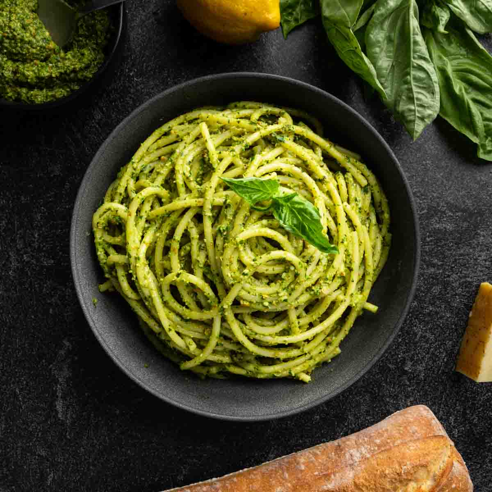

Pasta al Pesto recipe
Home

Description
Pasta al Pesto is a vibrant Italian dish from Liguria, famous for its fragrant green sauce made with fresh basil, pine nuts, garlic, Parmesan, and extra virgin olive oil. The pesto is tossed with freshly cooked pasta, often linguine or trofie, creating a fresh, herbaceous, and slightly nutty flavor. It's a quick yet flavorful meal that celebrates the essence of Mediterranean cooking with minimal ingredients and maximum freshness.
Ingredients
- 400 g (14 oz) pasta (linguine, trofie, or spaghetti)
- 2 cups fresh basil leaves
- 50 g (1/3 cup) pine nuts
- 2 cloves garlic
- 60 g (1/2 cup) grated Parmesan cheese
- 120 ml (1/2 cup) extra virgin olive oil
- Salt to taste
- Optional: a few tablespoons of pasta cooking water
Steps
- Cook the pasta: Bring a large pot of salted water to a boil and cook the pasta until al dente according to package instructions. Reserve a small cup of cooking water before draining.
- Make the pesto: In a food processor, combine basil leaves, pine nuts, garlic, Parmesan, and a pinch of salt. Pulse until roughly chopped, then slowly drizzle in the olive oil while blending until a smooth sauce forms.
- Combine: Return the drained pasta to the pot or a large mixing bowl. Add the pesto sauce and toss well, adding a splash of reserved pasta water if needed to coat the pasta evenly.
- Serve: Divide into plates, garnish with extra Parmesan or a few basil leaves, and serve immediately.